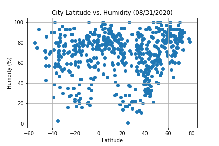

Humidity

Humidity percentage increases as move closer to the equator. This is caused by the build up of water vapor in the air. Locations near the equator are mostly surrounded by water, such as islands.
Humidity percentage increases as move closer to the equator. This is caused by the build up of water vapor in the air. Locations near the equator are mostly surrounded by water, such as islands.